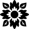
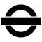
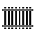

Rozdział 4 Klasyka
Piosenki z list przbojóW
4.1 Avond, Boudewijn de Groot

Avond (Groot and Nijgh 1997) [Wieczór] to piosenka uznawana przez Holendrów za najlepszą niderlandzkojęzyczną piosenkę wszechczasóW.
Nu hoef je nooit je jas meer aan te trekken
En te hopen dat je licht het doet
Laat buiten de stormwind nu maar razen in het donker
Want binnen is het warm en licht en goed
Hand in hand naar buiten kijkend waar de regen valt
Ik zie het vuur van hoop en twijfel in je ogen
En ik ken je diepste angst
Już nie musisz więcej zakładać kurtki
I się martwić, czy zapalą światła
Niech na dworze w ciemności szaleje wiatr
Bo w środku jest ciepło i widno i dobrze
Patrząc na dwór, gdzie pada deszcz trzymam cię za rękę
W twoich oczach widzę ogień nadziei i zwątpień
I znam twój najgłębszy lęk
Want je kunt niets zeker weten en alles gaat voorbij
Maar ik geloof, ik geloof, ik geloof, ik geloof, ik geloof in jou en mij
Bo niczego nie możesz być pewna, a wszystko przemija
Ale wierzę, wierzę, wierzę, wierzę, wierzę w ciebie i we mnie
En als je ’s morgens opstaat ben ik bij je
En misschien heb ik al thee gezet
En als de zon schijnt buiten gaan we lopen door de duinen
En als het regent gaan we t’rug in bed
Uren langzaam wakker worden, zwevend door de tijd
Ik zie het licht door de gordijnen
En ik weet, t’verleden geeft geen zekerheid
A kiedy wstaniesz rano, to ja będę przy tobie
I może herbata już będzie zrobiona
I jeśli na dworze będzie słonecznie, to pójdziemy na wydmy
A gdyby padało, to wrócimy do łóżka
Godziny powoli się budzą unosząc się w czasie
Widzę światło przez zasłony
I wiem, że przeszłość nie daje pewności
Ik doe de lichten uit en de kamer wordt nu donker
Een straatlantaarn buiten geeft wat licht
En de dingen in de kamer worden vrienden die gaan slapen
De stoelen staan te wachten op ’t ontbijt
En morgen wordt ik wakker met de geur van brood en honing
De glans van gouden zonlicht in je haar
En de dingen in de kamer, ik zeg ze welterusten
Vanavond gaan we slapen en morgen zien we wel
Maar de dingen in de kamer zouden levenloze dingen zijn
Zonder jou
Gaszę światło i teraz w pokoju robi się ciemniej
Latarnia na ulicy daje nieco światła
A rzeczy w pokoju stają się przyjaciółmi, którzy idą spać
Krzesła oczekują na śniadanie
A jutro obudzę się z zapachem chleba i miodu
Błysk złotych promieni słońca w twoich włosach
A rzeczą w pokoju, mówię dobranoc
Dzisiaj pójdziemy spać i zobaczymy się znowu jutro
Ale rzeczy w pokoju byłyby martwe
Bez ciebie
- Doe het licht maar uit. Po prostu wyłącz światło.
- Ik wil je nooit meer zien. Nie chcę cię nigdy więcej widzieć.
- Ze liepen hand in hand. Szli trzymając się za ręce.
- Die jongen toonde geen angst. Ten chłopiec nie okazywał strachu.
- Het is te hopen dat … Należy mieć nadzieją, że …
- De vlam zweeft vaak net boven het hout. Płomień unosi się często tuż nad drewnem.
- Ga Maria wakker maken. Idź obudź Marię
- Ik sta op het punt uit te gaan. Zaraz wychodzę.
- De geur van lelies vulde de kamer. Zapach lilii wypełnił pokój.
- De glans wordt gemeten volgens ISO 2813. Połysk mierzy się zgodnie z ISO 2813.
- Ik zie je wel bij de auto. Do zobaczenia w aucie.
4.2 Blauwe Dag, Suzan & Freek

Weet je nog dat jij me zei dat wij nooit zouden vluchten als een van ons
Loopt door de regen en nooit meer kijkt naar hoe het leven is in de zon
Weet je nog dat jij me zei dat jij d’r altijd bent als ik je nodig heb
Nee, ik ben het niet vergeten, nee
Wat jij me ooit hebt gezegd
Czy pamiętasz, jak mi powiedziałaś, że nie ucieklibyśmy nigdy, gdyby któreś z nas
Szło przez deszcz i już nigdy więcej nie oglądało tego, jak wygląda życie w słońcu
Czy pamiętasz, jak mi powiedziałaś, że jesteś zawsze przy mnie, gdy cię potrzebuję
Nie, ja tego nie zapomniałam, nie
Co mi kiedyś powiedziałeś
Want ik zie dat jij het moeilijk hebt en niet meer lachen kan zoals je vroeger deed
En nauwelijks in de gaten hebt dat je anders loopt dan dat je deed voorheen
Weet je nog dat jij me zei dat jij d’r altijd bent als ik je nodig heb
Nee, ik ben het niet vergeten, nee
Wat jij me ooit hebt gezegd
Bo widzę, że masz trudności i nie możesz się już śmiać, tak jak kiedyś
I ledwo zauważasz, że chodzisz inaczej niż to kiedyś robiłeś
Czy pamiętasz, jak mi powiedziałaś, że jesteś zawsze przy mnie, gdy cię potrzebuję
Nie, ja tego nie zapomniałam, nie
Co mi kiedyś powiedziałeś
Blauwe dag, als het dondert
En valt de hemel naar beneden, ben ik hier bij jou alleen
Blauwe dag, een seconde
Laten we dansen tot de morgen en de lucht weer opengaat
Gorszy dzień, kiedy grzmi
I niebo spada w dół, jestem tu z tobą sam na sam
Gorszy dzień, jedna sekunda
Tańczmy do rana, a niebo znów się przejaśni
Fiets met jou mee door heel de stad
Als jij dat wil, nou, dan doe ik dat. Ik ben hier op je blauwe dag
Blauwe dag, een seconde
Laten we dansen tot de morgen en de lucht weer opengaat
Pojechać z tobą na rowerze przez całe miasto
Jeśli tego chcesz, teraz, to to zrobię. Jestem tu w twój gorszy dzień
Gorszy dzień, jedna sekunda
Tańczmy do rana, a niebo znów się przejaśni
Weet je nog dat jij me zei dat jij d’r altijd bent wanneer ik ergens val
Nu lig ik zelf op de grond en ben ik diegene zonder licht in een donker dal
Ik ging van de top van de wereld naar de plek waar ik niemand ken
Nee, ik ben het niet vergeten, nee
Wat jij me ooit hebt gezegd
Czy pamiętasz, jak mi powiedziałaś, że jesteś zawsze przy mnie, gdy upadam
Teraz leżę na ziemi i jestem tu bez światła w jakiejś ciemnej dolinie
Zszedłem ze szczytu świata do miejsca, w którym nikogo nie znam
Nie, ja tego nie zapomniałam, nie
Co mi kiedyś powiedziałeś
- De lucht wordt donker. Niebo robi się ciemne.
- De lucht klaarde op. Niebo się przejaśniło.
- De hemel is blauw Niebo jest niebieskie.
- Zijn ziel was in het hemel Jego dusza była w niebie.
- Ik voel me blauw. Jestem przygnębiony.
- Weet je nog? Czy pamiętasz?
- Laten we haar alleen laten. Zostawmy ją w spokoju.
- Ik denk dat wij goede vrienden zouden kunnen zijn. Myślę, że moglibyśmy być dobrymi przyjaciółmi.
- Hij kan nauwelijks lezen. On ledwo umie czytać.
- Houd deze koffer in de gaten. Obserwuj tę walizkę.
4.3 Brabant, Guus Meeuwis
Brabant (Meeuwis and Rozenboom 2003) [Brabancja] to nieoficjalny hymn Brabancji Północnej, który powstał w Moskwie.
Een muts op mijn hoofd, mijn kraag staat omhoog
Het is hier ijskoud, maar gelukkig wel droog
Czapka na mojej głowie, mój kołnierz stoi do góry
Jest mroźno ale na szczęście sucho
De dagen zijn kort hier, de nacht begint vroeg
De mensen zijn stug, en er is maar één kroeg
Dni są tutaj krótkie, noc zaczyna się wcześnie
Ludzie są sztywni i jest tylko jeden pub
Als ik naar mijn hotel loop, na een donkere dag,
Dan voel ik mijn huissleutel diep in mijn zak
Gdy idę do mojego hotelu po ciemnym dniu
Głęboko w kieszeni wyczuwam klucz do domu
Ik loop hier alleen in een te stille stad
Ik heb eigenlijk nooit last van heimwee gehad
Maar de mensen ze slapen, de wereld gaat dicht
En dan denk ik aan Brabant, want daar brandt nog licht
Idę tu sam w zbyt cichym mieście
Tak naprawdę nigdy nie tęskniłem za domem
Ale ludzie, oni śpią, świat się zamyka
I wtedy myślę o Brabancji bo tam wciąż pali się światło
Ik mis hier de warmte van een dorpscafé,
De aanspraak van mensen met een zachte G
Tutaj tęsknię za ciepłem wiejskiej kawiarni
Za kontaktem z ludźmi o miękkim G
Ik mis zelfs het zeiken, op alles om niets
Was men maar op Brabant zo trots als een Fries
Tęsknię nawet za narzekaniem na wszystko bez powodu
Gdyby tylko Brabantczyk był tak dumny jak jest Fryzyjczyk
In het zuiden vol zon woon ik samen met jou
’t Is daarom dat ik zo van Brabanders houd
Mieszkam razem z tobą na południu pełnym słońca
Dlatego tak bardzo kocham Brabantczyków
De Peel en de Kempen en de Meierij,
Maar het mooiste aan Brabant ben jij, dat ben jij
Peel i Kempen i Meierij są piękne
Ale najpiękniejsza w Brabancji jesteś ty, to jesteś ty
- Als je niets te zeggen hebt, zeg dan niets., Jeśli nie masz nic do powiedzenia nic nie mów.NA
- Ze is net zo bezig als Tomek. Jest tak samo zajęta jak Tomek.
- De Peel, De Kempen en De Meierij zijn de mooiste plekken van Brabant. Peel, Kempen i Meierij to najpiękniejsze miejsca w Brabancji.
4.4 Dromen zijn bedrog, Marco Borsato

Dromen zijn bedrog (Fabrizio et al. 1994) [Sny są ulotne] jest uważana za jeden z najbardziej udanych singli w języku niderlandzkim wszech czasów.
Steeds als ik je zie lopen dan gaat de hemel een klein beetje open
Sterren, je laat ze verbleken met je ogen die altijd stralen
Jij kan de zon laten schijnen want je loopt langs en de wolken verdwijnen en als je lacht, lacht heel de wereld mee
Zawsze, kiedy widzę jak idziesz, wtedy odrobinę otwiera się niebo
Gwiazdy, sprawiasz że one bledną, swoimi oczami, które cały czas promienieją
Możesz pozwolić słońcu świecić, bo gdy przechodzisz chmury znikają a kiedy się śmiejesz, razem śmieje się cały świat
De meeste dromen zijn bedrog maar als ik wakker word naast jou dan droom ik nog
Ik voel je adem en zie je gezicht je bent een droom die naast me ligt
Je kijkt me aan en rekt je uit een keer in de zoveel tijd komen dromen uit!
Najczęściej sny są ulotne, ale kiedy budzę się obok ciebie, wciąż marzę
Czuję twój oddech i widzę twoją twarz, jesteś snem leżącym obok mnie
Patrzysz na mnie i się wyciągasz raz na jakiś czas marzenia się spełniają!
Jij moet me een ding beloven laat me nog lang in mijn dromen geloven
Zelfs als je even niet hier bent blijf in mijn slaap dan bij me
En als de zon weer gaat schijnen laat dan dat beeld wat ik heb niet verdwijnen. Als je zou gaan, neem je mijn dromen mee
Musisz mi obiecać jedno, pozwól mi jeszcze długo wierzyć w moje marzenia
Nawet jeśli cię chwilę tutaj nie ma, zostań ze mną kiedy śpię
A kiedy znów zaświeci słońce, nie pozwól fantazji którą mam zniknąć. Gdybyś szła, zabierz ze sobą moje marzenia
- Dromen zijn bedrog. Sen mara, Bóg wiara. [prov. za Czochralski]
- Met een klein beetje geluk. Przy odrobinie szczęścia.
- De deur gaat niet open, hij klemt. Drzwi się nie otwierają, są zablokowane.
- Kom met me mee. Chodź razem ze mną.
- Als ik vragen mag. Jeśli wolno spytać.
- Ik reik mijn hand naar je uit. Wyciągam rękę do ciebie.
- De narcissen kwamen uit. Wypuściły żonkile.
- Een keer in de zoveel tijd. Raz na jakiś czas.
- Mag ik even binnenkomen? Czy mogę na chwilę wejść?
- Ik blijf in slaap vallen. Ciągle zasypiam.
- Wat heb je vannacht gedroomd? Co ci się śniło dzisiaj w nocy?
- Waar droom je over? O czym marzysz?
4.5 Duurt Te Lang, Davina Michelle
Duurt Te Lang (Faria and Tang 2018) [To trwa zbyt długo] to numer, który czekał 5 lat na nowego wykonawcę i stanie się hitem.
We konden over alles praten, alles
Maar alles ging over de liefde, we vergaten alles
In een brief, een smsje, in een liedje schreef ik
Ik zal alles voor je doen en voor je liefde leef ik
Mogliśmy rozmawiać o wszystkim, o wszystkim
Ale wszystko poszło o miłość, zapomnieliśmy wszystko
Napisałem w liście, SMS-ie, w piosence
Zrobię dla ciebie wszystko i żyję dla twojej miłości
En die liefde kreeg ik en vaak in overmaten
Je kon de drempels van het leven aan mij overlaten
Je zag die meiden haten want je had je superheld
Ik had m’n vrienden net te vaak over jou verteld
I dostałem tę miłość, i często z nadmiarem
Przeszkody życiowe mogłaś pozostawić mi
Widziałeś nienawidzące dziewczyny, bo ty miałaś swego superbohatera
Opowiadałem mojej sieci przyjaciół zbyt często o tobie
Nu staren we samen naar de tafel, met de mondjes dicht
Met blikken die vanzelf spreken, in ons gezicht
Ik heb het overgrote deel van alles aangericht
Maar ik rijd te lang in deze tunnel en ik zie geen licht
Teraz wpatrujemy się razem w stół z zamkniętymi ustami
Ze spojrzeniami, które mówią same za siebie, w nasze twarze
Spowodowałem zdecydowaną większość tego wszystkiego
Ale jadę w tym tunelu zbyt długo i nie widzę światła
Dus doe je ogen dicht voor onze laatste zet
En denk terug aan het kleine huisje met het kleine bed
Shit, maar morgen is de pijn terug
Staan we uren op de halte, rijdt een trein terug
Więc zamknij oczy przed naszym ostatnim posunięciem
I wróć myślami do małego domku z małym łóżkiem
Cholera, ale ból wróci jutro
Będziemy stać godzinami na przystanku, pociąg pojedzie z powrotem
Het duurt te lang
We staan hier al een tijdje
En we moeten door, dus voor de laatste keer het spijt me
Het duurt te lang
To trwa zbyt długo
Stoimy tu już jakiś czas
Musimy do przodu, więc po raz ostatni wybacz mi
To trwa zbyt długo
Het duurt te lang
We staan stil
Wat jij wil, wat ik wil
Het duurt te lang
To trwa zbyt długo
Stoimy w miejscu
Czego chcesz ty, czego chcę ja
To trwa zbyt długo
Twee stille mensen aan de tafel, het is geen gezicht
Ik kan die route niet belopen met m’n ogen dicht
Je weet precies wat ik ga zeggen, ik weet het ook van jou
En op het eind vertel ik vast hoeveel ik van je hou
Dwoje milczących ludzi przy stole bez twarzy
Nie mogę iść dalej tą drogą z zamkniętymi oczami
Wiesz dokładnie, co powiem, ja wiem co powiesz ty
A na koniec powiem ci na pewno, jak bardzo cię kocham
En daarna slaan de deuren weer, en breekt er weer een glas
Daarna valt er weer een traan, en pak ik weer m’n tas
En daarna hou ik je weer stevig vast
En leg me kleren weer terug in de kast
A potem znów trzaskają drzwi i kolejna pęka szyba
Potem leci kolejna łza i znów biorę torbę
A potem na pewno znowu bardzo mocno cię tulę
I znowu wkładam swoje ubrania z powrotem do szafy
Dus, ik hou je nog een poosje vast
Want dan vergeet je nog hoe boos je was
Maar de pijn blijft zitten, dus het helpt niet
Dus waarschijnlijk is het morgen weer hetzelfde lied
Więc zatrzymam cię jeszcze na chwilkę na pewno
Bo wtedy jeszcze zapomnisz jak byłaś zła
Ale ból pozostaje w środku, więc to nie pomaga
Więc pewnie jutro od nowa ta sama piosenka
De tekst komt op hetzelfde neer in dezelfde beat
Een soort van gouden verf op een blok verdriet
Conflicten zijn normaal, maar het moet ons niet verstikken
Me tranen vallen nu, dus ik laat het liedje snikken
Tekst chodzi tak samo w górę jak i w dół w tym samym rytmie
Jakiś rodzaj złotej farby na bloku smutku
Konflikty są normalne, ale nie powinny nas dusić
Moje łzy nie lecą, więc pozwalam tej piosence szlochać
- Misschien moet je de diagnose aan mij overlaten. Być może powinieneś diagnozę pozostawić mi.
- Hij heeft deze schade aangericht. On wyrządził te szkody.
- Onze kosten belopen circa 1 miljoen PLN. Nasze koszty wynoszą około 1 milion złotych.
- Je bent al een poos binnen. Jesteś w środku już przez jakiś czas.
- Beweeg je vingers langzaam op en neer.NA
4.6 Een beetje verliefd, André Hazes

In een discotheek, zat ik van de week
En ik voelde mij daar zo alleen
’t Was er warm en druk, ik zat naast een lege kruk
Ik verlangde zo naar jou hier aan m’n zij
W jakiejś dyskotece byłem na tygodniu
I czułem się tam bardzo samotny
Było tam gorąco i tłoczno, siedziałem przy pustym stołku
Tak pragnąłem cię tutaj przy moim boku
Ja, ik denk nog steeds hoe het was geweest
Toen je naast me zat hier aan de bar
Ik vroeg: ‘’Drink je mee?’’, dat vond jij oké
Toen je proostend naar me keek werd ik zo week
Tak, wciąż się zastanawiam, jak to było
Gdy się do mnie przysiadłaś przy barze
Spytałem: ‘’Napijesz się ze mną?’’, zgodziłaś się
Kiedy na mnie spojrzałaś przy toaście, stałem się taki miękki
Een beetje verliefd, ik dacht een beetje verliefd
Als ik wist wat jij toen dacht, had ik nooit op jou gewacht
Als een kind zat ik te dromen deze nacht ben jij voor mij
Maar die droom ging snel voorbij
Trochę zakochany, myślałem trochę zakochany
Gdybym wiedział, co wtedy myślisz, nigdy bym na ciebie nie czekał
Jak małe dziecko ciągle marzyłem, tej nocy jesteś dla mnie
Ale ten sen szybko minął
Jij stond op en zei: ‘’Hou m’n plaatsje vrij
Ik moet even weg maar ben zo terug’’
Ach, die kruk bleef leeg tot ik in de gaten kreeg
Dat je wegging zonder mij, ik was nu alleen
Wstałaś i powiedziałaś: ‘’Zajmij mi miejsce
Muszę na chwilę wyjść, ale zaraz wrócę’’
Ach, ten stołek stał pusty, dopóki nie zauważyłem
Że odeszłaś beze mnie, teraz byłem sam
- Weet je wat, ik ben er zat van. Wiesz co, mam tego dosyć.
- Ik verlang ernaar met je alleen te zijn. Pragnę być z tobą sam.
- Ik heb de wet aan m’n zij(-de). Prawo mam po swojej stronie.
- Dat vind ik erg leuk. To mi się bardzo podoba.
- We zitten te praten. Gadamy sobie.
- Ik krijg dit in de gaten. Zdaję sobie sprawę z tego
4.7 Het dorp, Wim Sonneveld
Het dorp (Ferrat and Verhage 1974) [Wieś] to wspomnienia autora tekstu o utraconym dzieciństwie. Hugo Verhage to naprawdę Friso Wiegersma. Z wykonawcą piosenki Wimem Sonneveld byli w związku. .
Thuis heb ik nog een ansichtkaart
Waarop een kerk een kar met paard
Een slagerij J. van der Ven
Een kroeg, een juffrouw op de fiets
W domu wciąż mam pocztówkę
Na niej kościół i koń z wozem
Sklep mięsny J. van der Ven
Pub, dziewczyna na rowerze
Het zegt u hoogstwaarschijnlijk niets
Maar het is waar ik geboren ben
Dit dorp, ik weet nog hoe het was
De boerenkind’ren in de klas
Pewnie nic ci to nie mówi
Ale tam się urodziłem
Ta wieś, wciąż pamiętam jak to było
Wiejskie dzieci w klasie
Een kar die ratelt op de keien
Het raadhuis met een pomp ervoor
Een zandweg tussen koren door
Het vee, de boerderijen
Wóz klekocze na kamieniach
Ratusz z pompą przed nim
Polna droga wśród pszenicy hen
Żywy inwentarz, zagrody chłopskie
En langs het tuinpad van m’n vader
Zag ik de hoge bomen staan
Ik was een kind en wist niet beter
Dan dat ’t nooit voorbij zou gaan
I wzdłuż ścieżki w ogrodzie ojca
Widziałem jak rosną wysokie drzewa
Byłem dzieckiem i wiedziałem na pewno
Że to nigdy nie przeminie
Wat leefden ze eenvoudig toen
In simp’le huizen tussen groen
Met boerenbloemen en een heg
Maar blijkbaar leefden ze verkeerd
Jakże wtedy żyli zwyczajnie
W prostych domach wśród zieleni
Z polnymi/wiejskimi kwiatami i żywopłotem
Ale widocznie żyli niewłaściwie
Het dorp is gemoderniseerd
En nou zijn ze op de goeie weg
Want ziet, hoe rijk het leven is
Ze zien de televisiequiz
Wieś została zmodernizowana
A teraz są na dobrej drodze
Zobacz, jakie życie jest bogate
Oglądają teleturniej
En wonen in betonnen dozen
Met flink veel glas, dan kun je zien
Hoe of het bankstel staat bij Mien
En d’r dressoir met plastic rozen
I mieszkają w betonowych pudełkach
Z dużą ilością szkła, wtedy możesz zobaczyć
Czy u Mien dobrze stoi kanapa
I jej komoda z plastikowymi różami
En langs het tuinpad van m’n vader
Zag ik de hoge bomen staan
Ik was een kind en wist niet beter
Dan dat ’t nooit voorbij zou gaan
I wzdłuż ścieżki w ogrodzie ojca
Widziałem jak rosną wysokie drzewa
Byłem dzieckiem i wiedziałem na pewno
Że to nigdy nie przeminie
De dorpsjeugd klit wat bij elkaar
In minirok en beatle-haar
En joelt wat mee met beat-muziek
Ik weet wel het is hun goeie recht
Młodzież ze wsi włóczy się razem
W spódniczce mini i włosach na Beatlesa
I wydzierają się razem przy ich muzyce
Wiem dobrze, takie ich święto prawo
De nieuwe tijd, net wat u zegt
Maar het maakt me wat melancholiek
Ik heb hun vaders nog gekend
Ze kochten zoethout voor een cent
Nowe czasy, co na to poradzisz
Ale popadam przy tym w melancholię
Już znałem ich ojców
Kupili lukrecję za grosz
Ik zag hun moeders touwtjespringen
Dat dorp van toen, het is voorbij
Dit is al wat er bleef voor mij
Een ansicht en herinneringen
Widziałem ich matki na skakance
Tamtej wsi już nie ma
To wszystko, co mi pozostało
Pocztówka i wspomnienia
Toen ik langs het tuinpad van m’n vader
De hoge bomen nog zag staan
Ik was een kind, hoe kon ik weten
Dat dat voorgoed voorbij zou gaan
Kiedyś wzdłuż ścieżki w ogrodzie ojca
Widziałem jak jeszcze rosły wysokie drzewa
Byłem dzieckiem, skąd mogłem wiedzieć
Że to na dobre przeminie
- Weet je nog? Czy pamiętasz?
- Ik weet het nog niet. Nadal nie wiem.
- Ik zou graag naar Polen gaan. Chciałbym pojechać do Polski.
- Zij gaan totaal voorbij aan het risico. Całkowicie ignorują ryzyko.
- Ik heb nog niet gegeten. Jeszcze nic nie jadłem.
- Mien is een vorm van Wilhelmina. Mien jest formą Wilhelminy.
4.8 Het is een nacht, Guus Meeuwis

Het is een nacht (Meeuwis 1995) [Jest taka noc] powstała po romantycznym weekendzie, jaki spędził autor ze swoją dziewczyną Valérie Gregoire w Brugii.
Je vraagt of ik zin heb in een sigaret
Het is twee uur ’s nachts
We liggen op bed
In een hotel in een stad
Waar niemand ons hoort
Waar niemand ons kent
En niemand ons stoort
Op de vloer ligt een lege fles wijn
En kledingstukken die van jou of mij kunnen zijn
Een schemering de radio zacht
En deze nacht heeft alles
Wat ik van een nacht verwacht
Pytasz, czy mam ochotę na papierosa
Jest druga w nocy
Jesteśmy w łóżku
W hotelu, w mieście
Gdzie nikt nas nie słyszy
Gdzie nikt nas nie zna
I nikt nam nie przeszkadza
Na podłodze leży pusta butelka po winie
I ubrania, które mogą być twoje lub moje
Półmrok, radio cicho gra
I ta noc ma wszystko
Czego oczekuję od nocy
Het is een nacht
Die je normaal alleen in films ziet
Het is een nacht
Die wordt bezongen in het mooiste lied
Het is een nacht
Waarvan ik dacht dat ik hem nooit beleven zou
Maar vannacht beleef ik hem met jou ohoh
Jest taka noc
Którą normalnie widzisz tylko w filmach
Jest taka noc
Którą wychwalają w najpiękniejszej piosence
Jest taka noc
Której nie spodziewałem się nigdy przeżyć
Ale dziś w nocy przeżywam ją z tobą, Ooo
Ik ben nog wakker en ik staar naar het plafond
En ik denk aan de dag lang geleden begon
Het zomaar er vandoor gaan met jou
Niet wetend waar de reis eindigen zou
Nu lig ik hier in een wildvreemde stad
En heb net de nacht van mijn leven gehad
Maar helaas er komt weer licht door de ramen
Hoewel voor ons de wereld
Vannacht heeft stil gestaan
Nadal nie śpię i wpatruję się w sufit
I myślę o tym dniu co zaczął się tak dawno
Tak po prostu przemija przy tobie
Nie wiedząc, gdzie zakończy się ta podróż
Teraz leżę tutaj w zupełnie obcym mieście
I właśnie miałem noc swojego życia
Ale niestety światło znów wpada przez okna
Ale co tam, świat dla nas
Zatrzymał się dziś w nocy
Maar een lied blijft slechts bij woorden
Een film is in scène gezet
Maar deze nacht met jou
Is levensecht
Ale piosenka to tylko słowa
Film został tylko zagrany
Ale dzisiejsza noc z tobą
Jest prawdziwa
En vannacht beleef ik hem met jou ohoh
En ik hou alleen nog maar van jou ohoh
En ik hou alleen nog maar van jou
I dziś przeżywam ją z tobą Ooo…
I kocham tylko wyłącznie ciebie Ooo…
I kocham tylko wyłącznie ciebie
- Je bent trouwens eigenlijk wel geweldig. Nawiasem mówiąc, jesteś naprawdę świetny.
- Als ik niet Pools was, zou ik geen Pools kennen. Gdybym nie był Polakiem, nie znałbym polskiego.
- Heb ik daarvoor een vergunning nodig? Czy potrzebuję na to zezwolenie?
- Waar kan ik meer te weten komen over …? Gdzie mogę dowiedzieć się więcej o…?
- Wanneer … Kiedy ……..?
- Ik heb zin in een borrel. Mam ochotę na drinka.
- De lijn is bezet. Linia jest zajęta.
- Als ik meer tijd had, zou ik op je wachten. Gdybym miał/a więcej czasu, poczekałbym na ciebie.
- Je moeder kan echt lekker koken. Twoja mama naprawdę potrafi dobrze gotować.
- Dat is veel, he? To dużo, prawda?
- Wanneer moet ik terugkomen? Kiedy muszę wrócić?
- Zullen wij naar de duinen gaan? Może pójdziemy na wydmy?
4.9 Ik kan het niet alleen, De Dijk

Ik kan het niet alleen (Arzbach, Broek, and Lubbe 1989) [Ja tak nie mogę sam] to jedna z najbardziej znanych piosenek De Dijk do dziś odtwarzana przez wiele stacji radiowych w Holandii..
Elke morgen
Elke middag
Elke avond
Iedere nacht
Każdego ranka
Każdego popołudnia
Każdego wieczoru
Każdej nocy
Stel dat ik er wel
Maar jij er niet was
Dan was morgen
Morgen waarschijnlijk weer zo’n dag
Co, jeśli tam byłem
A ty nie
Wtedy jutro
Jutro pewnie jest kolejny taki dzień
En ik kan het niet
Ik kan er niet omheen
Ik kan het niet
Ik kan het niet alleen
Ja tak nie mogę
Nie mogę temu zaprzeczyć
Ja tak nie mogę
Ja tak nie mogę sam
Natte ramen
Kale muren
Lege flessen
Lege flessen op de gang
Mokre okna
Gołe ściany
Puste butelki
Puste butelki na korytarzu
Lange tanden
Late uren
Weinig zon
Weinig zon en veel behang
Jedzenie bez smaku
Siedzenie do późna
Niewiele słońca
Niewiele słońca i pełno tapet
Ik heb het geprobeerd
Gedaan wat ik kan
Maar alles gaat verkeerd
Ik ben ook maar een man
Już próbowałem
Zrobiłem co mogłem
Ale wszystko idzie nie tak
Jestem tylko mężczyzną
En ik kan het niet alleen
Ja tak nie mogę sam
Elke morgen
’s Middags
’s Avonds
Maar vooral ’s nachts
Każdego poranka
Po południu
Wieczorem
A zwłaszcza w nocy
Stel dat ik er wel
En jij er niet was
Dan was morgen
Morgen waarschijnlijk weer zo’n dag
Co, jeśli tam byłem
A ty nie
Wtedy jutro
Jutro pewnie jest kolejny taki dzień
- Weer zo’n dag uit het leven van Juf Nowak. Kolejny dzień z życia panny Nowak.
- Hij eet met lange tanden. On je niechętnie.
- Beter laat dan nooit. Lepiej późno niż wcale.
- We kunnen er niet omheen dat … Nie możemy omijać faktu, że …
- We nemen Agata ook maar mee. Zabieramy również Agatę ze sobą.
- Ik ben ook maar een mens. Jestem tylko człowiekiem.
4.10 Ik Voel Me Zo Verdomd Alleen, Danny De Munk
Ik Voel Me Zo Verdomd Alleen (Loomans and Veen 1984) [Czuję się tak cholernie samotny] pochodzi z filmu `Ciske de Rat’ opartego na książkach Piet Bakkera. Danny De Munk zagrał w nim i wykonał tytułową piosenką.
Krijg toch allemaal de klere
Val voor mijn part allemaal dood
Ik heb geen zin om braaf te leren
Ik eindig toch wel in de goot
Kinderen willen niet met me spelen
Noemen me Rat en wijzen me na
De enige die me wat kan schelen
Die is er nooit, dat is m’n pa
Oby was wszystkich wzięła cholera
Dla mnie wszyscy padnijcie trupem
Nie mam zamiaru grzecznie się uczyć
I tak skończę w rynsztoku
Dzieci nie chcą się ze mną bawić
Nazywają mnie Szczurem i pokazują palcem
Jedyny, kto dla mnie cokolwiek znaczy
A którego nigdy nie ma, to jest mój tata
M’n moeder kan me niet verdragen
Nooit doe ik iets voor haar goed
Om liefde hoef ik ook al niet te vragen
Schelden is alles wat ze doet
Geen wonder dat m’n pa is gaan varen
Ik mocht niet mee, ik ben te klein
Ik moet ’t in m’n eentje klaren
Tot ’ie ooit weer terug zal zijn
Moja matka nie może mnie znieść
Dla niej niczego nigdy nie robię dobrze
O miłość nawet nie ma co pytać
Wszystko co ona potrafi, to mnie zwymyślać
Nic dziwnego, że mój tata wypłynął w morze
Nie mogłem razem z nim, jestem za mały
Muszę samemu to jakoś wyklarować
Zanim on kiedyś tu będzie z powrotem
Had ik maar iemand om van te houden
Twee zachte armen om me heen
Die mij altijd beschermen zouden
Ik voel me zo verdomd alleen
Gdybym miał tylko kogoś do kochania
Wokół siebie dwa miękkie ramiona
Które będą zawsze mnie chronić
Czuję się tak cholernie samotny
Misschien als vaders schip er is
Als ’ie weer terug is van de zee
Zegt ’ie nog eens luister Cis
Waarom ga je niet met me mee
Ik ben toch ook nog maar een kind
Kan ’t niet helemaal alleen
Misschien dat ik ooit het geluk nog vind
Maar hoe, dat is een groot probleem
Może, jak statek ojca tutaj będzie
Jak on się z morza wróci
Powie raz jeszcze, słuchaj Cis
Dlaczego nie wybierzesz się ze mną
Ja przecież jeszcze jestem dzieckiem
Nie mogę tego zrobić zupełnie sam
Możliwe, że kiedyś jeszcze znajdę szczęście
Ale jak, to już jest duży problem
- Kolere en klere zijn hetzelfde. Cholera i cholercia to to samo.
- Voor mijn part … Jeżeli chodzi o mnie …
- Ik mag dood vallen als het niet waar is. Niech padnę trupem, jeśli to nieprawda.
- Het kan me niets schelen. Jest mi wszystko jedno.
- Tomek kwam hier in zijn eentje. Tomek przyszedł tu sam.
- Ik heb mijn werk geklaard. Wykonałem swoją pracę.
- Zou ik wachten tot ze weer komt? Czy powinienem czekać na jej powrót?
- Hij was helemaal alleen in het huis. On był zupełnie sam w domu.
- Ik hoef niet af te vallen. Ja nie muszę się odchudzać.
- Als ik vragen mag … Jeżeli wolno spytać …
- Ik bel je morgen, als ik weer terug ben. Zadzwonię do ciebie jutro po powrocie.
- Ik kan het niet alleen. Nie mogę tego zrobić sam. 4.9
4.11 La vie est belle, Diggy Dex ft. DJ Vali

Geld laat de wereld draaien
Liefde laat de wereld zien
’t Was het eerste wat ik opschreef vanochtend toen ik opstond
’t Was blijkbaar wat er opkomt
Pieniądz pozwala światu się kręcić
Miłość pozwala światu widzieć
To była pierwsza rzecz, którą zapisałem dziś rano, kiedy wstałem
To było jasne, co się okazało
’k Kleed me aan en m’n zoon ook
Rij naar school, rij terug, pak de krant, sla hem open
En m’n ogen dwalen door een tekst
Zoveel drama op een afstand het blijft toch iets geks
Ubieram siebie i swojego syna też
Jadę do szkoły, jadę z powrotem, biorę gazetę, otwieram ją
I moje oczy wędrują po tekście
Tyle dramatu na odległość pozostaje jednak czymś szalonym
Pak m’n tas, loop naar buiten,
Krijg plots een berichtje van een vriend met luister deze moet je even horen
’t Is vreemd hoe het werkt
Hoe iemand z’n verdriet ertoe kan leiden dat een prachtig lied wordt geboren
Chwytam moją torbę, wychodzę na zewnątrz,
Nagle dostaję wiadomość od znajomego ze słyszysz musisz tego posłuchać
To dziwne, jak to działa
Jak czyjaś żałoba może doprowadzić do tego, że przychodzi na świat piękna piosenka
Loop verder naar de trein, m’n ogen vallen op een vrouw
Niet helemaal honderd, althans volgens onze regels
Iedereen die blijft naar haar kijken, terwijl ik zie dat ze danst in de regen
We doen het allemaal met wat je krijgt hier vooral het leven
Idę dalej na pociąg, moje oczy padają na kobietę
Niecałe sto, przynajmniej według naszych zasad
Każdy, kto został na nią patrzy, podczas gdy ja widzę, że ona tańczy w deszczu
Wszyscy to robimy z tym co tu dostajemy, zwłaszcza życiem
La vie est belle Het leven is prachtig ×3
Je n’y comprends rien Ik begrijp er niets van
Je vais rire jusqu’à la fin Ik zal lachen tot het einde
La vie est belle Het leven is prachtig ×2
Życie jest piękne ×3
Nic z tego nie rozumiem
Będę śmiać się do końca
Życie jest piękne ×2
Stap uit in de stad en begin te lopen
Langs nieuwe straten waar ik vroeger van gedroomd heb
Uit verlangens van een nooit geleefd leven
Koptelefoon op en de radio op play
Wysiadam na mieście i zaczynam iść
Wzdłuż nowych ulic, o których kiedyś marzyłem
Z pragnień nigdy nie przeżywanego życia
Słuchawki na uszach i radio na play
’k Hoor een man terug van weggeweest zeggen
’t Ging even niet zo best, laat me rustig uitleggen
’k Heb net m’n vrouw verloren
Terwijl hij haar beschrijft voel ik de glimlach verborgen in zijn stem
Słyszę mężczyznę z powrotem w grze mówiącego
Przez jakiś czas nie szło tak dobrze, pozwól na spokojnie wyjaśnię
Właśnie straciłem żonę
Kiedy ją opisuje, czuję uśmiech ukryty w jego głosie
En ik denk nog eens terug aan al die eindeloze nachten
Aan m’n vrienden, m’n geliefden en ook soms de donkerste gedachten
Waar ik was al die tijd weet ik niet
Misschien ergens op een plek waar ik veel te veel verwachtte
I myślę z powrotem o tych wszystkich niekończących się nocach
O moich przyjaciołach, moich ukochanych i czasami najciemniejszych myślach
Gdzie ja byłem przez cały ten czas nie wiem
Może w miejscu, gdzie dużo za dużo oczekiwałem
Bestel wat te drinken en schrijf wat op, betaal de ober, loop weg
En vervolg m’n tocht richting een brug waar een man staat te gebaren
’k Denk, ach ’t zal wel, ik laat ’m
Kijk nog een keer om, het is een vriend, hij zwaait
Zamawiam coś do picia i coś notuję, płacę kelnerowi, uciekam
I kontynuuję moją podróż w kierunku mostu, na którym gestykuluje mężczyzna
Myślę, a co tam, zostawiam go
Spoglądam jeszcze raz, to przyjaciel, on macha
- De kinderen horen alles, maar luisteren zelden. Dzieci słyszą wszystko, ale rzadko słuchają.
- Daar kun je geen nee tegen zeggen. Nie możesz odmówić.
- Je kijkt wel, maar je ziet niks. Patrzysz, ale nic nie widzisz.
- Wil je weglopen van huis? Chcesz uciec z domu?
- Ik ben terug van weggeweest. Wróciłem do gry.
- We zijn ergens op een godverlaten plek. Jesteśmy w miejscu zapomnianym przez boga.
4.12 Leef, André Hazes jr.

Op een vrijdag in de kroeg ergens in Amsterdam
Zat aan de bar met een glas een oude wijze man
Hij zei dat die nog maar een paar dagen had
Dus pak het leven, pak alles en ga er mee op pad
W piątek w pubie w Amsterdamie siedział
Stary mądry człowiek ze szklanką przy barze
Powiedział, że zostało mu jeszcze tylko kilka dni
Więc chwytaj życie, weź wszystko i ruszaj ze mną
En hij zei: ’’Leef, alsof het je laatste dag is
Leef, alsof de morgen niet bestaat
Leef, alsof het nooit echt af is
En leef, pak alles wat je kan’’
I rzekł: ’’Żyj, jakby to był twój ostatni dzień
Żyj, jakby nie miało być jutra
Żyj, jakby to nie był koniec do końca
I żyj, łap wszystko’’
En ga, a, a, a
A, a, a, a
A, a, a, a
Pak alles wat je kan
I leć, a, a, a
A, a, a, a
A, a, a, a
Łap wszystko, co możesz
En ga, a, a, a
A, a, a, a
Ga
Pak alles wat je kan
I leć, a, a, a
A, a, a, a
Leć
Łap wszystko, co możesz
Hij vertelde dat ’ie zich had gewerkt in het zweet
Geld verdiend als water maar nooit echt had geleefd
Z’n vrouw was bij hem weg, voor een ander ingeruild
Af en toe gelachen maar veel te veel gehuild
Opowiedział, jak się w życiu napocił przy robocie
Pieniądze spływały lekko ale nigdy nie żył naprawdę
Żona go opuściła zamieniła sobie na innego
Zbyt mało śmiał się a zbyt dużo się napłakał
- Hij is zo vlug als water. On chwyta w biegu.
- Ik wilde net op pad gaan. Właśnie miałem wyruszyć w drogę.
- Gele gans zelf. Zażółć gęślą jaźń.
4.13 Liefs uit Londen, BLØF

Liefs uit Londen (Slager and Kennis 1998) [Kocham z Londynu] to pierwszy z hitów grupy BLØF, którego tekst był zainspirowany grą planszową ‘Podróż dookoła świata’.
Van de wereld weet ik niets, niets dan wat ik hoor en zie, niets dan wat ik lees
Ik ken geen andere landen, zelfs al ben ik er geweest
O świecie nie wiem nic, nic oprócz tego co słyszę i widzę, nic oprócz tego co czytam
Nie znam innych krajów, nawet jeśli tam byłem
Grote steden ken ik niet behalve uit de boeken, behalve van tv
Ik ken geen andere stad dan de stad waarin ik leef
Dużych miast nie znam tyle co z książek, tyle co z telewizji
Nie znam innego miasta niż to, w którym żyję
Zij stuurt me kaarten uit Madrid en uit Moskou komt een brief met de prachtigste verhalen
Oh God, wat is ze lief
Gisteren uit Lissabon ‘’ik mis je’’ en een zoen
Ona wysyła mi kartki z Madrytu, a z Moskwy przyszedł list z najpiękniejszymi opowieściami
Mój Boże, jaka ona jest kochana
Wczoraj z Lizbony ‘’tęsknię za tobą’’ i całus
Vandaag uit Praag een kattebel, want er is zoveel te doen
En morgen, als de postbode mijn huis weer heeft gevonden dan stort ze mijn hart vol met al het liefs uit Londen
Dzisiaj z Pragi jakiś gryzmoł, bo tam jest tyle do roboty
A jutro, gdy tylko listonosz znajdzie mój dom, ona napełni moje serce do pełna tymi wszystkimi kocham z Londynu
Van de wereld weet ik niets, niets dan wat ik hoor en zie, niets dan wat ik voel
Ik leef van dag tot dag, zonder vrees en zonder doel
O świecie nie wiem nic, nic oprócz tego co słyszę i widzę, nic oprócz tego co czuję
Żyję z dnia na dzień, bez obaw i bez celu
Verre landen ken ik niet behalve uit mijn atlas, die droom ik elke nacht
Maar ik droom alleen de landen waar ze ooit aan me dacht
Odległych krajów nie znam tyle co z mojego atlasu, który śni mi się co noc
Ale śnią mi się tylko te kraje, w których ona kiedyś o mnie myślała
Als een mooi en groot geloof aan de muur van mijn gedachten hangt een wereldkaart te wachten tot ze terugkomt
Met haar reizen in mijn hoofd steek ik vlaggen in de aarde, dezelfde kleur, dezelfde waarde
Jak piękna i wielka wiara, na ścianie moich myśli wisi mapa świata czekając aż ona wróci
Wraz z jej podróżami, w myślach wtykam w ziemię flagi, ten sam kolor, to samo znaczenie
Maar …
Lecz …
- Ik weet van niks. Nic nie wiem.
- Ik ga, zelfs al regent het. Idę, chociaż już pada deszcz.
- Behalve hij, kwam niemand naar het feestje. Poza nim, nikt nie przyszedł na przyjęcie.
- Ik ken geen van drieën. Nie znam nikogo z tej trójki.
- Ik ken u niet. Nie znam Pan-i/a.
- Is zijn verhaal waar? Czy jego historia jest prawdziwa?
- Ik vrees van niet. Obawiam się, że nie.
- Wat ben je mooi. Jaka jesteś piękna.
- Ik wil je zoenen. Chcę cię pocałować.
- U mag nu de bruid kussen. Możesz teraz pocałować pannę młodą.
- Als je me laat spreken, dan kan ik alles uitleggen. Jak pozwolisz mi mówić, wtedy ja mogę wszystko wyjaśnić.
4.14 Mag ik dan bij jou, Claudia de Breij
Als de oorlog komt en als ik dan moet schuilen
Mag ik dan bij jou?
Als er een clubje komt waar ik niet bij wil horen
Mag ik dan bij jou?
Gdy wybuchnie wojna, a ja będę musiała się ukryć
Czy będę mogła u ciebie?
Gdy powstanie klub, w którym nie chcę być
Czy będę mogła u ciebie?
Als er een regel komt waar ik niet aan voldoen kan
Mag ik dan bij jou?
En als ik iets moet zijn wat ik nooit geweest ben
Mag ik dan bij jou?
Gdy wejdzie reguła, której nie mogę spełnić
Czy będę mogła u ciebie?
Gdy stanę się kimś, kim nigdy nie byłam
Czy będę mogła u ciebie?
Mag ik dan bij jou schuilen als het nergens anders kan?
En als ik moet huilen droog jij m’n tranen dan?
Want als ik bij jou mag, mag jij altijd bij mij
Kom wanneer je wilt ik hou een kamer voor je vrij
Czy będę mogła u ciebie się schronić, gdy nie będzie gdzie indziej?
Gdy zapłaczę, czy wysuszysz me łzy?
Bo jeśli mogę u ciebie, ty zawsze możesz u mnie
Przyjdź kiedy tylko chcesz, mam dla ciebie wolny pokój
Als het onweer komt en als ik dan bang ben
Mag ik dan bij jou?
Als de avond valt en ’t is mij te donker
Mag ik dan bij jou?
Gdy zacznie się burza, a ja będę się bała
Czy będę mogła u ciebie?
Gdy zapadnie wieczór, a mi jest za ciemno
Czy będę mogła u ciebie?
Als de lente komt en als ik dan verliefd ben
Mag ik dan bij jou?
Als de liefde komt en ik weet het zeker
Mag ik dan bij jou?
Gdy zacznie się wiosna, a ja się zakocham
Czy będę mogła u ciebie?
Gdy przyjdzie miłość, a ja będę tego pewna
Czy będę mogła u ciebie?
Als het einde komt en als ik dan bang ben
Mag ik dan bij jou?
Als het einde komt en als ik dan alleen ben
Mag ik dan bij jou?
Gdy nadejdzie koniec, a ja będę się bała
Czy będę mogła u ciebie?
Gdy nadejdzie koniec, a ja będę sama
Czy będę mogła u ciebie?
- Mogen we bij jou overnachten? Czy możemy u ciebie przenocować?
- De spullen moeten wel aan één regel voldoen. Przedmioty muszą być zgodne z jedną zasadą.
- Dat is jouw thuis, daar en nergens anders. To jest twój dom, tam i nigdzie indziej.
- Als je niets te zeggen hebt, zeg dan niets. Jeśli nie masz nic do powiedzenia, nie mów nic.
4.15 Nacht, Guus Meeuwis & Kraantje Pappie
Het is een nacht
Die je normaal alleen in films ziet
Het is een nacht
Die wordt bezongen in het mooiste lied
Het is een nacht
Waarvan ik dacht dat ik ’m nooit beleven zou
Maar vannacht beleef ik ’m met jou, oh
Jest taka noc
Którą normalnie widzisz tylko w filmach
Jest taka noc
Którą wychwalają w najpiękniejszej piosence
Jest taka noc
Której nie spodziewałem się nigdy przeżyć
Ale dziś w nocy przeżywam ją z tobą, Ooo
Op de grond ligt een Châteauneuf-du-Pape
De radio zacht, rond middernacht
Ik hoor Suus en Freek, een Blauwe Dag
En ik kijk hoe je slaapt, ik hou je vast
Want ik weet dat het niet lang meer duurt voor jij gaat
Ik snap dat jij me niet te dichtbij laat
En je weer vrijmaakt, en je op tijd staat
Je twijfelt aan of ik echt meen wat ik heb gezegd
En of ik nog steeds wel de echte ben
En of ik niet ren naar 050 en je niet meer ken als een slechte vent
Maar vannacht is dat allemaal niet de case
Voor nu is het nog nooit zo mooi geweest
Jij en ik, the world can wait
En ben ik voor eerst opeens compleet
Na ziemi leży Châteauneuf-du-Pape
Radio cicho gra, jest koło północy
Słyszę Suus i Freek, Blauwe Dag
Patrzę jak śpisz, przytulam cię mocno
Bo wiem, że to nie potrwa już długo zanim wyjdziesz
Rozumiem, że nie pozwolisz mi się zbliżyć
I uwolnisz się ponownie i wstaniesz na czas
Wątpisz, czy naprawdę myślę co powiedziałem
I czy nadal jestem prawdziwy
I czy nie biegnę na 50 i już cię nie znam jak jakiś zły facet
Ale dziś w nocy to w ogóle nie o to chodzi
Jeszcze nigdy nie było tak pięknie
Ty i ja, świat może poczekać
Nagle po raz pierwszy jestem spełniony
Als het kon, zou ik steeds met je zijn
En als je wennen moet, begrijp ik baby, neem je de tijd
Hier leven we voor, plus cash en baguettes
En deze nacht heeft alles wat ik zocht op deze plek
Byłbym z tobą zawsze, gdybym tylko mógł
Ale jeśli musisz się zastanowić, rozumiem to baby, nie spiesz się
Po to żyjemy, plus kasa i bagietki
I ta noc ma wszystko, czego szukałem w tym miejscu
Hey schat, ik zou m’n kleine teen geven voor nog één nacht
Het is natuurlijk geen wonder dat ik je
Donderdag al bijzonder zag in het dons gepakt heb
En onze nacht werd d’r een als
Die van Leo en Kate was
We on top of the world, ben volledig gebrainwashed
But I like it, yeah, jij showt wat life is
En ja, je life is er een als Kylie’s
Maar net iets ronder en iets gezonder
Dat is precies hoe mijn vibe is, yeah
Jij bent de nicest
Bel de bellboy, bestel champagne
Fuck the prices, je rolt met Crane
Hej kochanie, oddałbym mój mały palec u nogi za jeszcze jedną noc
Nic dziwnego, że po tym jak cię w czwartek,
Choć szczególny zobaczyłem, zabrałem cię do łóżka
A nasza noc stała się taką,
Jaką mieli Leo i Kate
Jesteśmy na szczycie świata, mam kompletnie wyprany mózg
Ale lubię to, tak, pokazujesz, czym jest życie
I tak, twoje życie przypomina życie Kylie
Ale nieco bardziej zaokrąglone i nieco zdrowsze
Dokładnie taki jest mój klimat, tak
Jesteś najmilsza
Wołać obsługę, zamówmy szampana
Pieprzyć ceny, ty kręcisz z Crane
Maar vannacht beleef ik ’m met jou, oh
Ja ik hou alleen nog maar van jou, oh-oh
Ja ik hou alleen nog maar van jou
Ale dziś przeżywam ją z tobą Ooo
I kocham tylko wyłącznie ciebie
I kocham tylko wyłącznie ciebie
- Châteauneuf-du-Pape is een Franse wijnstreek. Châteauneuf-du-Pape to francuski region winiarski.
- Blauwe dag 4.2 is de tweede single van Suzan & Freek. Blauwe dag to drugi singiel duetu Suzan & Freek.
- Je laat me niet dichtbij komen. Nie pozwalasz mi się zbliżyć.
- Al ben ik arm, ik ben gelukkig. Chociaż jestem biedny, to jestem szczęśliwy.
- Leo (Leonardo DiCaprio) en Kate (Kate Winslet) speelden in de Titanic. Leo (Leonardo DiCaprio) i Kate (Kate Winslet) grali w Titanic’u.
- Kylie (Kylie Kristen Jenner) is een Amerikaans televisiepersoonlijkheid. Kylie (Kylie Kristen Jenner) to amerykańska osobowość telewizyjna.NA
- In het Engels is “Kraan” “Crane”. W języku angielskim „Kraan” to „Crane”.
4.16 Oceaan, Racoon
Er is verrekte veel te zeggen
En te liegen nog veel meer
Heel veel bagger bloot te leggen
Al doet het graven nog zo’n zeer
Ik ben een eikel maar ik leer
Da się cholernie dużo powiedzieć
O wiele więcej skłamać
Bardzo dużo brudów wyciągnąć
Choć to grzebanie wciąż sprawia ból
Jestem palantem, ale się uczę
Een oceaan om in te vluchten
Nooit jaloers te hoeven zijn
Liefde om je hart te luchten
Een oceaan
Hoe lekker zou het zijn
W głąb oceanu uciekać
Nigdy zazdrosnym nie musieć być
Miłość w twe serce pompować
Ocean
Jakże cudownie mogłoby być
Was er iets waar ik om wenste
Voordat de put droog kwam te staan
Dan was het lang zullen ze leven
Familie waar ik veel van hou
En voor wie ik sterven zou
Czy było coś, czego naprawdę chciałem
Zanim studnia stała się pusta
Wtedy było, żeby długo żyli
Rodzina, którą naprawdę bardzo kocham
I za którą życie mógłbym oddać
Een oceaan om in te schuilen
Nooit alleen meer hoeven zijn
Ik heb gesmeekt niet meer te huilen
Alsjeblieft
Het leven jaagt geen angst meer aan
Ik heb al zo ver moeten kruipen
Het laatste stuk zal ook wel gaan
Tot ik ga staan
W oceanie się skryć
Nigdy samemu nie musieć być
Błagałem, by więcej nie płakać
Proszę
Życie już więcej nie przeraża
Tak daleko musiałem się czołgać
Ten ostatni kawałek też dobrze musi pójść
Zanim wstanę
Een oceaan om in te vluchten
Nooit jaloers te hoeven zijn
Liefde om je hart te luchten
Een oceaan
Alleen van mij
W głąb oceanu uciec
Nigdy zazdrosnym nie musieć być
Miłość w twe serce pompować
Ocean
Tylko dla mnie
Een oceaan om te verzuipen
Een dag of wat een held te zijn
Laat die ander nu maar kruipen
Een oceaan
Vol tranen is van mij
Alleen van mij
W oceanie się zatopić
Dzień bądź dłużej bohaterem być
Niech inni teraz dalej będą się czołgać
Ocean
Pełen łez jest dla mnie
Tylko dla mnie
- Verrek! O, cholera!
- Ik begrijp niet waarom die schoenen zo’n zeer doen. Nie rozumiem, dlaczego te buty tak bardzo bolą.
- Je hoeft niet te komen. Nie musisz przychodzić.
- Ik wens om het nieuws te volgen. Chcę prześledzić newsy.
- Luister, als ik sterf vannacht… Słuchaj, jeśli umrę dziś w nocy…
- Jullie zullen spoedig om genade smeken. Wkrótce będziecie błagać o miłość.
- Ik wou je geen angst aanjagen. Nie chciałem cię przestraszyć.
- Zouden ze al zo ver zijn? Czy byliby tak daleko?
- De export onder druk kwam te staan. Eksport znalazł się pod presją.
4.17 O, o, Den Haag, Harry Klorkestein
O, o, Den Haag (Jekkers 1982) [Oj, oj, Haga] to piosenka uznawana za nieoficjalny hymn Hagi. Nazwa wykonawcy to anagram nazwy prawdziwego zespołu Klein Orkest.
Ik zou best nog wel een keertje net als vroeger in Moerwijk willen wonen
Na het eten een partijtje voetbal in de tuin, de ouders langs de lijn
In december met de hele buurt op jacht om kerstbomen te rausen
Op oudejaarsavond fikkie stoken, vooral die autobanden rookten fijn
Bardzo chciałbym raz jeszcze, tak jak kiedyś, na Moerwijku zamieszkać
Po obiedzie przyciąć w nogę w ogrodzie, rodzice wzdłuż linii
A w grudniu z cała okolica na polowanie co by kilka choinek przyciągnąć
W Sylwestra rozniecać pożary, opony dymiły się szczególnie dobrze
Ik zou best nog wel een keertje met die ouwe naar ADO willen kijken
In het Zuiderpark, de lange zij, een warme worst, supporters om je heen
Lekker kankeren op Theo van den Burch en die lange van Vianen
Want bij elke lage bal dan dook die eikel er steevast overheen
Bardzo chciałbym raz jeszcze ze starszym na ADO popatrzeć
W Zuiderparku, długi bok, ciepła kiełbaska, kibice wokół ciebie
Cudne wyzwiska za Theo van den Burch i tym wysokim van Vianen
Ponieważ z każdą niska piłka, ten żołądź zawsze przelatywał nad nią
O, o, Den Haag, mooie stad achter de duinen
De Schilderswijk, de Lange Poten en het Plein
O, o, Den Haag, ik zou met niemand willen ruilen
Meteen gaan huilen, als ik geen Hagenees zou zijn
O, o, Haga, piękne miasto za wydmami
Schilderswijk, Lange Poten no i Plein
O, o, Haga, nie chciałbym się z nikim zamienić
Płakałbym od razu, gdybym nie był Hażaninem
Ik zou best nog wel een keertje net als vroeger een nachie willen stappen
Op mijn Puch een wijffie halen en daarna dansen in de Marathon
Na afloop op het Rijswijkseplein een harinkie gaan happen
De dag erna een kater dus naar Scheveningen, lekker bakken in de zon
Bardzo chciałbym raz jeszcze, tak jak kiedyś wyjść w noc
Zgarnąć laskę na mojego Pucha i potem tańczyć w Marathonie
Po wszystkim na Rijswijkseplein pójść śledzika przekąsić
Następnego dnia kac, wiec na Scheveningen cudownie smażyć się w słońcu
Ik zou best nog wel een keertje … ach, wat leg ik toch te dromen
Want Den Haag is door de jaren zo veranderd, voor mij toch veel te vlug
Dat Nieuw Babylon moest dat er trouwens eigenlijk nou wel zo nodig komen?
Zo komt die ooievaar op de Vijverberg dus never-nooit meer terug
Bardzo chciałbym raz jeszcze … ach, o czym ja śnię
Ponieważ Haga przez te lata bardzo się zmieniła, jak dla mnie to zbyt szybko
Czy ten Nieuw Babylon musiał, tak miedzy nami, się tam pojawić?
Wiec nie pojawi się już nigdy więcej bocian na Vijverbergu
- Ik heb zin in een borrel. Mam ochotę na drinka.
- Nog een keer! Jeszcze raz!
- Je bent trouwens eigenlijk wel geweldig. Nawiasem mówiąc, jesteś naprawdę świetny.
- Als ik niet Pools was, zou ik geen Pools kennen. Gdybym nie był Polakiem, nie znałbym polskiego.
- Heb ik daarvoor een vergunning nodig? Czy potrzebuję na to zezwolenie?
- Waar kan ik meer te weten komen over …? Gdzie mogę dowiedzieć się więcej o…?
- Dat is veel, he? To dużo, co?
- Wanneer moet ik terugkomen? Kiedy muszę wrócić?
- Zullen wij naar de duinen gaan? Może pójdziemy na wydmy?
- De lijn is bezet. Linia jest zajęta
- Als ik meer tijd had, zou ik op je wachten. Gdybym miał/a więcej czasu, poczekałbym na ciebie.
- Je moeder kan echt lekker koken. Twoja mama naprawdę potrafi dobrze gotować.
4.18 Over de muur, Klein Orkest
Over de muur (Jekkers 1984) [Ponad murem] to holenderski poprzednik polskiej “Arahji” Kultu. “Mój dom murem podzielony” to jakby nie było “Mijn huis door een muur gescheiden”.
Oost-Berlijn, Unter Den Linden
Er wandelen mensen langs vlaggen en vaandels
Waar Lenin en Marx nog steeds op een voetstuk staan
Berlin Wschodni, Aleja pod Lipami
Tam przechadzają się ludzie obok flag i sztandarów
Gdzie Lenin i Marks wciąż stoją na piedestale
En iedereen werkt, hamers en sikkels
Terwijl in paradepas de wacht wordt gewisseld
Veertig jaar socialisme, er is in die tijd veel bereikt
I wszyscy pracują, sierpem i młotem
Podczas parady zmienia się warta
Czterdzieści lat socjalizmu, wiele osiągnięto w tym czasie
Maar wat is nou die heilstaat als er muren omheen staan
Als je bang en voorzichtig met je mening moet omgaan
Ach wat is nou die heilstaat, zeg mij wat is hij waard
Wanneer iemand die afwijkt voor gek wordt verklaard
Ale czym jest ten stan zbawienia skoro otaczają go mury
Skoro się boisz i musisz ostrożnie obchodzić się ze swoją opinią
Ach, czym jest ten stan zbawienia, powiedz mi, czego on jest wart
Gdy ktoś, kto zbacza, zostaje uznany za szalonego
En alleen de vogels vliegen van Oost- naar West-Berlijn
Worden niet teruggefloten, ook niet neergeschoten
Over de muur, over het ijzeren gordijn
Omdat ze soms in het westen, soms ook in het oosten willen zijn
Omdat ze soms in het westen, soms ook in het oosten willen zijn
I tylko ptaki latają ze Wschodniego do Zachodniego Berlina
Bez wezwania na baczność, bez zestrzelenia
Ponad murem, ponad żelazną kurtyną
Ponieważ czasami chcą być na zachodzie, a czasem także na wschodzie
Ponieważ czasami chcą być na zachodzie, a czasem także na wschodzie
West-Berlijn, de Kurfürstendamm
Er wandelen mensen langs porno- en peepshow
Waar Mercedes en Cola nog steeds op een voetstuk staan
Berlin Zachodni, Grobla Elektorska
Tam przechadzają się ludzie obok klubów striptease i porno
Gdzie Mercedes i Cola wciąż stoją na piedestale
En de neonreclames die glitterend lokken
Kom dansen, kom eten, kom zuipen, kom gokken
Dat is nou veertig jaar vrijheid, er is in die tijd veel bereikt
I neony, które świecąc wabią
Chodź tańczyć, chodź jeść, chodź pić, chodź zagrać
To już czterdzieści lat wolności, wiele osiągnięto w tym czasie
Maar wat is nou die vrijheid zonder huis zonder baan
Zoveel Turken in Kreuzberg die amper kunnen bestaan
Goed, je mag demonstreren, maar met je rug tegen de muur
En alleen als je geld hebt, dan is de vrijheid niet duur
Ale czym jest ta wolność bez domu, bez pracy
Tylu Turków na Kreuzbergu, którzy ledwo mogą się utrzymać
Dobra, możesz demonstrować, ale tyłem do ściany
I tylko jeśli masz pieniądze, wolność nie jest droga
En de vogels vliegen van West- naar Oost-Berlijn
Worden niet teruggefloten, ook niet neergeschoten
Over de muur, over het ijzeren gordijn
Omdat ze soms in het oosten, soms ook in het westen willen zijn
Omdat er brood ligt soms bij de Gedächtniskirche
Soms op het Alexanderplein
A ptaki latają ze Wschodniego do Zachodniego Berlina
Bez wezwania na baczność, bez zestrzelenia
Ponad murem, ponad żelazną kurtyną
Ponieważ czasami chcą być na zachodzie, a czasem także na wschodzie
Bo tam chleb leży czasami na Gedächtniskirche
Czasami na Alexanderplein
- Fiets en wandel langs kastelen en landhuizen. Przejedź się rowerem i przejdź wzdłuż zamków i dworów.
- Ze kon niet omgaan met de angst. Nie mogła znieść strachu.
- De directie heeft hem teruggefloten. Dyrekcja postawiła go na baczność.
4.19 Papa, Stef Bos

Papa (Bos 1991) [Tato] to wyznanie skierowane do ojca Bosa u którego zdiagnozowano raka. Leczenie “Taty” się powiodło, zmarł przeżywszy jeszcze 23 lata.
Ik heb dezelfde ogen
En ik krijg jouw trekken om mijn mond
Vroeger was ik driftig
Vroeger was jij driftig
Maar we hebben
Onze rust gevonden
En we zitten naast elkaar
En we zeggen niet zoveel
Voor alles wat jij doet
Heb ik hetzelfde ritueel
Papa, ik lijk steeds meer op jou
Mam oczy takie same
A na mojej twarzy rzeźbią się rysy twoje
Kiedyś porywczy byłem ja
Kiedyś porywczy byłeś ty
Ale znaleźliśmy
Spokój w sobie
I siedzimy obok siebie
I mówimy niewiele
Do wszystkiego, co robisz
Rytuał mam ten sam
Tato, coraz bardziej przypominam ciebie
Ik heb dezelfde handen
En ik krijg jouw rimpels in mijn huid
Jij hebt jouw ideeën
Ik heb mijn ideeën
En we zwerven in gedachten
Maar we komen altijd thuis
De waarheid die je zocht
En die je nooit hebt gevonden
Ik zoek haar ook
En tevergeefs zolang ik leef
Want papa, ik lijk steeds meer op jou
Mam ręce takie same
A na mojej skórze robią się zmarszczki twoje
Ty pomysły masz swoje
Ja pomysły mam swoje
I wędrujemy w myślach
Ale zawsze wracamy z powrotem
Ta prawda, której szukałeś
I której nigdy nie znalazłeś
Też szukam jej ja
I na próżno, dopóki żyję
Bo tato, coraz bardziej przypominam ciebie
Vroeger kon je streng zijn
En ik heb je soms gehaat
Maar jouw woorden
Ze liggen op mijn lippen
En ik praat nu
Zoals jij vroeger praatte
Ik heb een goddeloos geloof
En ik hou van elke vrouw
En misschien ben ik geworden
Wat jij helemaal niet wou
Maar papa, ik lijk steeds meer op jou
Kiedyś surowy mogłeś być
I czasami nienawidziłem ciebie
Ale słowa twoje
One są na ustach moich
A rozmawiam teraz ja
Jak rozmawiałeś kiedyś ty
Wyznaję bezbożną wiarę
I kocham wszystkie kobiety
I stałem się może czymś
Czego wcale nie chciałeś ty
Bo tato, coraz bardziej przypominam ciebie
Jij gelooft in God
Dus jij gaat naar de hemel
En ik geloof in niks
Dus we komen elkaar na de dood
Na de dood nooit meer tegen
Maar papa, ik hou steeds meer van jou
Ty wierzysz w Boga
Więc pójdziesz do nieba
A ja nie wierzę w nic
Więc nigdy więcej po śmierci
Po śmierci się nie spotkamy
Bo tato, coraz bardziej przypominam ciebie
- Ik zie een kleine glimlach om haar mond trekken.NA
- Ik krijg slaap. Chce mi się spać.
- Ik krijg NA
- Niet alles is voor geld te koop. Nie wszystko można kupić za pieniądze.
- Ik lijk op mijn moeder. Wyglądam jak moja matka.
- Inmiddels ervaren steeds meer mensen de nadelen. Tymczasem coraz więcej osób doznaje szkód.
- Ik kom thuis tegen zes uur. Będę w domu przed szóstą.
- Hij zwerft al maanden door Europa. Od miesięcy wędruje po Europie.
- Zij liggen te praten. Oni rozmawiają leżąc.
- Dat ligt mij niet. To mi nie leży.
- Eén die weldra op aller lippen zal liggen. Ten, który wkrótce będzie na ustach wszystkich.
4.20 Pastorale, Ramses Shaffy & Liesbeth List

Pastorale (Nijgh and Groot 1969) [Pastorałka] to psychodeliczna rozmowa ziemskiego dziecka z potężnym słońcem .
Mijn hemel blauw met gouden hallen, mijn wolkentorens, ijskristallen, kometen, manen en planeten, ah
Alles draait om mij
Moje niebo niebieskie ze złotymi salami, moje chmurne wieże, kryształy lodu, komety, księżyce i planety, ach
Wszystko się kręci wokół mnie
En door de witte wolkenpoort tot diep onder de golven boort mijn vuur, mijn liefde, zich in de aarde
En bij het water speelt een kind en alle schelpen die het vindt gaan blinken als ik lach
I przez białe chmurne wrota sięgające głębin poniżej fal wkręca się mój ogień, moja miłość, w ziemię
A nad wodą bawi się dziecko i wszystkie znalezione przez nie muszle zaczynają błyszczeć gdy się uśmiecham
’k Hou van je warmte op mijn gezicht, ik hou van de koperen kleur van je licht
Ik geef je water in mijn hand en schelpen uit het zoute zand
Ik heb je lief, zo lief
Uwielbiam twoje ciepło na mojej twarzy, uwielbiam miedziany kolor twojego światła
Daję ci wodę w mojej dłoni i muszle wyjęte ze słonego piasku
Kocham cię, tak bardzo
Ik scheur de rotsen met mijn stralen verhoog de meren in de dalen en onweersluchten doe ik vluchten, ah
Als de regen valt
Rozdzieram skały swymi promieniami podnoszę jeziora w dolinach i przeganiam burze, ach
Gdy pada deszcz
Verberg je ogen in mijn hand voordat m’n glimlach ze verbrandt m’n vuur, m’n liefde, mijn gouden ogen
’t Is beter als je nog wat wacht want even later komt de nacht en schijnt de koele maan
Ukryj swe oczy w mojej dłoni, zanim mój uśmiech je wypali, mój ogień, moja miłość, moje złote oczy
Będzie lepiej jak trochę poczekasz, bo nieco później przyjdzie noc i zaświeci chłodny księżyc
De nacht is te koud, de maan te grijs toe neem me toch mee naar je hemelpaleis
Daar wil ik zijn alleen met jou en stralen in het hemelblauw
Ik heb je lief, zo lief
Noc jest zbyt zimna, księżyc zbyt blady, więc zabierz mnie już do twojego niebiańskiego pałacu
Chcę być tam z tobą sam na sam i promieniować w niebiańskim błękicie
Kocham cię, tak bardzo
Als ik de aarde ga verwarmen laat ik haar leven in m’n armen, van sterren weefde ik het verre, ah
Het noorderlicht
Gdy ogrzeję ziemię, pozwolę jej żyć w moich ramionach, z dala od gwiazd utkałem, ach
Zorzę polarną
Maar soms ben ik als kokend lood, ik ben het leven en de dood, in vuur, in liefde, in alle tijden
M’n kind ik troost je, kijk omhoog vandaag span ik mijn regenboog die is alleen voor jou
Ale czasami jestem jak wrzący ołów, jestem życiem i śmiercią, w ogniu, w miłości, przez cały czas
Moje dziecko, pocieszę cię, spójrz w górę, dziś rozciągam tęczę tylko dla ciebie
Nee, nooit sta ik een seconde stil, geen mens kan mij dwingen wanneer ik niet wil
Geen leven dat ik niet begon, je kunt niet houden van de zon
Nie, nigdy się nie zatrzymam nawet na chwilę, gdy nie chcę, żaden człowiek nie może mnie zmusić
Żadne życie, którego nie począłem, nie możesz kochać słońca
’k Wil liever branden, neem me mee wanneer je vanavond gaat slapen in zee en vliegen langs jouw hemelbaan
Ik wil niet meer bij jou vandaan
Ik heb je lief, zo lief
Wolę spłonąć, zabierz mnie ze sobą, gdy wieczorem położysz się spać w morzu i odlecisz po niebiańskiej orbicie
Nie chcę być dłużej z dala od ciebie
Kocham cię, tak bardzo
- Wie zwijgt, stemt toe. Milczenie oznacza zgodę.
- Alsjeblieft, ik wil liever alleen zijn.Proszę, wolę być sam.
- Ik heb je lief, ik heb je kinderen lief en je kinderen houden van jou! Kocham cię, kocham twoje dzieci, a twoje dzieci kochają ciebie.NA
- Hij houdt mij niet bij jou vandaan. Nie zatrzyma mnie z dala od ciebie.
4.21 Per spoor (Kedeng kedeng), Guus Meeuwis & Vagant

Per spoor (Kedeng kedeng) (Meeuwis 1996) [Koleją (Bang bang)] to zapis z podróży pociągiem do dziewczyny..
Kedeng Kedeng Kedeng Kedeng Kedeng
Kedeng Kedeng Kedeng Kedeng Kedeng oe oe
Kedeng Kedeng Kedeng Kedeng Kedeng
Kedeng Kedeng Kedeng Kedeng Kedeng oe oe
Bang bang ×5
Bang bang ×5 och och
Bang bang ×5
Bang bang ×5 och och
En kilometers spoor schieten onder mij door
Ik ben op weg naar jou, want ik ben weg van jou
Vanochtend vroeg vertrokken in de luwte na de nacht en tien minuten op de trein gewacht
Want die had wat vertraging mijn god daar baal ik van
Omdat ik nu tien minuten minder bij jou blijven kan
I kilometry torów stukają wciąż pode mną
Jestem w drodze do ciebie, bo jestem z dala od ciebie
Wcześnie rano wyruszyłem w ciszy po nocy i czekałem na pociąg dziesięć minut
Przez to, ze był trochę opóźniony, mój Boże, zrobiło mi się słabo
Bo teraz mogę zostać z tobą o dziesięć minut krócej
Ik zit in een coupé niet roken tweede klas, heb de hele bank voor mij alleen
De conducteur komt langs: “Jongen voeten van de bank”
Hij vraagt mijn kaart, “Waar ga je heen?”
“Nou ik ga naar mijn lief toe, is dit de goede trein?”
Hij zegt: “Het staat niet op je kaart maar ik weet waar jij moet zijn”
Siedzę w przedziale zakaz palenia druga klasa, całe siedzenie mam tylko dla siebie
Przechodzi konduktor: „Chłopcze, nogi z siedzenia”
Pyta o mój bilet, „Dokąd jedziesz?”
„Jak to, jadę do mojej miłości, czy to odpowiedni pociąg?”
Mówi: „Tego nie ma na twoim bilecie, ale wiem, gdzie powinieneś być”
De trein raast alsmaar verder van station naar station
Ik kom op plaatsen waar ik nooit ben geweest
Er rammelt plots kar roept een juffrouw: “Koffie, thee!” ik heb wel dorst, toch zeg ik nee
Want de trein vermindert vaart terwijl mijn hart steeds sneller gaat
Kijk uit het raam om te zien of zij daar staat
Pociąg gna dalej ze stacji na stacji
Wpadam do miejsc, w których nigdy nie byłem
Nagle grzechocze wózek dziewczyna krzyczy: „Kawa, herbata!” jestem spragniony, ale mówię nie
Przez to, że pociąg zwalnia, moje serce w tym czasie przyspiesza
Wyglądam przez okno, żeby sprawdzić, czy ona tam stoi
Ik stap uit, kijk om me heen, even voel ik mij alleen want ik zie haar nog niet staan
Maar vanachter een pilaar verschijnt haar lachende gezicht
Voor mijn gevoel lijkt alles langzamer te gaan
En ik ren op haar af en zij komt mij tegemoet
En achter ons vertrekt de trein, omdat een trein nou eenmaal verder moet
Wychodzę, rozglądam się, przez chwilę czuję się samotny, bo jej jeszcze nie widzę
Ale jej uśmiechnięta twarz pojawia się zza kolumny
Moim zdaniem wszystko wydaje się zwalniać
I biegnę do niej, a ona podchodzi się przywitać
A pociąg odjeżdża za nami, bo pociąg musi teraz jechać dalej
En ik blijf bij jou slapen want jij woont bij het spoor
En ‘s nachts oelala gaat het ritme door
I zostanę z tobą na noc, bo mieszkasz przy torze
A nocą u la la ten rytm leci dalej
- Ik baal ervan als je liegt. Nienawidzę, kiedy kłamiesz.
- Ik kom morgenochtend langs om je op te halen. Podjadę jutro rano, żeby cię odebrać.
- Waar ging je heen? Dokąd poszedłeś?
4.22 Zing, Vecht, Huil, Bid, Lach, Werk en Bewonder, Ramses Shaffy
Zing, Vecht, Huil, Bid, Lach, Werk en Bewonder (Shaffy 1971) [Śpiewaj, Walcz, Płacz, Módl Się, Śmiej Się, Pracuj i Podziwiaj] NOTE.
Voor degene in een schuilhoek achter glas
Voor degene met de dichtbeslagen ramen
Voor degene die dacht dat ie alleen was
Moet nu weten, we zijn allemaal samen
Do tego w ukryciu za szkłem
Do tego zza zakutych okien
Do tego, który myślał, że jest sam
Teraz musisz wiedzieć, wszyscy jesteśmy razem
Voor degene met ’t dichtgeslagen boek
Voor degene met de snelvergeten namen
Voor degene die ’t vruchteloze zoeken
Moet nu weten, we zijn allemaal samen
Do tego z zatrzaśniętą księgą
Do tego o szybko zapominanych imionach
Do tego, który szuka na darmo
Teraz musisz wiedzieć, wszyscy jesteśmy razem
Zing, vecht, huil, bid, lach, werk en bewonder
Zing, vecht, huil, bid, lach, werk en bewonder
Zing, vecht, huil, bid, lach, werk en bewonder
Zing, vecht, huil, bid, lach, werk en bewonder
Niet zonder ons
Śpiewaj, walcz, płacz, módl się, śmiej się, pracuj i podziwiaj
Śpiewaj, walcz, płacz, módl się, śmiej się, pracuj i podziwiaj
Śpiewaj, walcz, płacz, módl się, śmiej się, pracuj i podziwiaj
Śpiewaj, walcz, płacz, módl się, śmiej się, pracuj i podziwiaj
Nie bez nas
Voor degene met de slapeloze nacht
Voor degene die ’t geluk niet kan beamen
Voor degene die niets doet, die alleen maar wacht
Moet nu weten, we zijn allemaal samen
Do tego z nieprzespaną nocą
Do tego, który nie może poświadczysz o szczęściu
Do tego, który nic nie robi, który jedynie czeka
Teraz musisz wiedzieć, wszyscy jesteśmy razem
Voor degene met z’n mateloze trots
In z’n risicoloze hoge toren
Op z’n risicoloze hoge rots
Moet nu weten, zo zijn we niet geboren
Do tego z niezmierzoną pychą
W swej bezpiecznej wysokiej wieży
Na bezpiecznej wysokiej skale
Teraz musisz wiedzieć, nie tak się urodziliśmy
Voor degene met ’t open gezicht
Voor degene met ’t naakte lichaam
Voor degene in ’t witte licht
Voor degene die weet, we komen samen
Do tego z odkrytym obliczem
Do tego z nagim ciałem
Do tego w białym świetle
Do tego, który wie, idziemy razem
- Ik zeg het alleen maar! Ja tylko ci mówię!
- Wij kunnen toch alleen maar wachten. Możemy tylko czekać.
4.23 België (Is er leven op Pluto…?), Het Goede Doel
België (Is er leven op Pluto…?) (Westbroek 1982) [Belgia (Czy na Plutonie jest życie …?)] to chyba jedyna piosenka, w której pojawia się Polska.
Waar kan ik heen, ik kan niet naar Duitsland
Kan niet naar Duitsland, daar zijn ze zo streng
Waar kan ik heen, ik kan niet naar Chili
Kan niet naar Chili, daar doen ze zo eng
Dokąd mogę się udać, do Niemiec nie mogę
Nie mogę do Niemiec, oni są tam tacy surowi
Dokąd mogę się udać do Chile nie mogę
Nie mogę do Chile, oni są tam tacy straszni
’k Wil niet wonen in Koeweit
Want Koeweit dat is me te heet
En wat Amerika betreft
Dat land bestaat niet echt
Nie chcę mieszkać w Kuwejcie
Bo Kuwejt jest dla mnie za gorący
A jeśli chodzi o Amerykę
Ten kraj tak naprawdę nie istnieje
Waar kan ik heen, ’k wil niet naar Noord-Ierland
Niet naar Noord-Ierland, daar gaat alles stuk
Waar kan ik heen, ik kan niet naar China
’k Wil niet naar China, dat is me te druk
Dokąd mogę się udać, do Irlandii Północnej nie chcę
Nie do Irlandii Północnej, tam wszystko się psuje
Dokąd mogę się udać, do Chin nie mogę
Nie chcę do Chin, dla mnie to zbyt tłoczno
’k Wil niet wonen in Schotland
Want Schotland dat is me te nat
En de USSR
Dat gaat me net te ver
Nie chcę mieszkać w Szkocji
Bo Szkocja to dla mnie za mokro
A ZSRR
Dla mnie to poszło aż za daleko
Is er leven op Pluto
Kun je dansen op de maan
Is er een plaats tussen de sterren
Waar ik heen kan gaan
Czy na Plutonie jest życie?
Czy można tańczyć na Księżycu?
Czy jest miejsce wśród gwiazd
Do którego mogę się udać?
Waar kan ik heen, ik kan niet naar Cuba
’k Wil niet naar Cuba, dat is me te zoet
Waar kan ik heen, ik kan niet naar Polen
’k Wil niet naar Polen, daar gaat het te goed
Dokąd mogę się udać, na Kubę nie mogę
Nie chcę na Kubę, dla mnie to zbyt słodko
Dokąd mogę się udać, do Polski nie mogę
Nie chcę do Polski, tam idzie zbyt dobrze
’k Wil niet wonen in Lapland
Want Lapland dat is me te koud
En ik wil weg uit Nederland
Want hier krijg ik het benauwd
Nie chcę mieszkać w Laponii
Bo Laponia to dla mnie za zimno
I chcę opuścić Holandię
Bo tutaj dostaję duszności
’k Heb getwijfeld over België
Omdat iedereen daar lacht
’k Heb getwijfeld over België
Want dat taaltje is zo zacht
Zastanawiałem się nad Belgią
Bo wszyscy się uśmiechają
Zastanawiałem się nad Belgią
Bo ten język jest taki miękki
’k Stond zelfs in dubio
Maar ik nam geen enkel risico
’k Heb getwijfeld over België
België
Nawet miałem wątpliwości
Ale nie podjąłem żadnego ryzyka
Zastanawiałem się nad Belgią
Belgią
- Waar ga je heen? Dokąd idziesz?
- Gaan we nu eng doen? - Ben je bang voor me? Czy będziemy teraz przerażający? - Boisz się mnie?
- -Hoe gaat het? -Het gaat goed. -Jak się miewasz? -Dobrze idzie.
- Ik krijg wat ik wil. Dostaję to, czego chcę.
- Ik ben nog steeds in dubio er over. Nadal mam co do tego wątpliwości.
- Geen enkel boek is het lezen waard. Żadna książka nie jest warta przeczytania.
4.24 Alles Kan Een Mens Gelukkig Maken, Het Goede Doel & René Froger
Alles Kan Een Mens Gelukkig Maken (Westbroek and Temming 1988) [TITLE.PL] to utwór znany również pod tytułem ‘Een eigen huis’.
Ik kan niet zeggen dat ik iets te kort kom
Geen idee geen benul wat gebrek aan liefde is
Als ik geen zin heb om te koken loop ik even naar de markt
Voor een moot gebakken vis
Ik kan niet zeggen dat ik iets te kort kom
Geen idee geen benul wat gebrek aan liefde is
Als ik geen zin heb om te koken loop ik even naar de markt
Voor een moot gebakken vis
En als ik morgen geen zin heb om te werken
Dan stel ik al het werk tot overmorgen uit
En als de kleuren van mijn huis me irriteren
Dan vraag ik of mijn buurman het vandaag nog overspuit
En als ik morgen geen zin heb om te werken
Dan stel ik al het werk tot overmorgen uit
En als de kleuren van mijn huis me irriteren
Dan vraag ik of mijn buurman het vandaag nog overspuit
Een eigen huis een plek onder de zon
En altijd iemand in de buurt die van me houden kon
Toch wou ik dat ik net iets vaker
Iets vaker simpelweg gelukkig was oho (2x)
Een eigen huis een plek onder de zon
En altijd iemand in de buurt die van me houden kon
Toch wou ik dat ik net iets vaker
Iets vaker simpelweg gelukkig was oho (2x)
Ik kan niet zeggen dat ik iets te kort kom
Geen idee geen benul wat gebrek aan liefde is
Vandaag kocht ik mijn derde videorecorder
Van nu af aan is er dus geen programma dat ik mis
Ik kan niet zeggen dat ik iets te kort kom
Geen idee geen benul wat gebrek aan liefde is
Vandaag kocht ik mijn derde videorecorder
Van nu af aan is er dus geen programma dat ik mis
Mijn vader en mijn moeder zijn nog allebei in leven
Dankzij hun heb ik zo’n fijne jeugd gehad
En voordat jij en ik vanavond vroeg onder de wol gaan
Gaan we met z’n tweeën drie keer uitgebreid in bad
Mijn vader en mijn moeder zijn nog allebei in leven
Dankzij hun heb ik zo’n fijne jeugd gehad
En voordat jij en ik vanavond vroeg onder de wol gaan
Gaan we met z’n tweeën drie keer uitgebreid in bad
Een eigen huis een plek onder de zon
En altijd iemand in de buurt die van me houden kon
Toch wou ik dat ik net iets vaker
Iets vaker simpelweg gelukkig was oho (2x)
Een eigen huis een plek onder de zon
En altijd iemand in de buurt die van me houden kon
Toch wou ik dat ik net iets vaker
Iets vaker simpelweg gelukkig was oho (2x)
Ja alles alles kan een mens gelukkig maken
Een zingende merel de geur van de zee
Ja alles alles kan een mens gelukkig maken
De zon die doorbreekt een vers kopje thee!
Ja alles alles kan een mens gelukkig maken
Een zingende merel de geur van de zee
Ja alles alles kan een mens gelukkig maken
De zon die doorbreekt een vers kopje thee!
- NANA
References
Arzbach, Nico, Antonie Broek, and Huub van der Lubbe. 1989. Ik Kan Het Niet Alleen. https://youtu.be/ltSsojzp90M.
Bos, Stef. 1991. Papa. https://youtu.be/ptGJ8wzeGDE.
Breij, Claudia de. 2009. Mag Ik Dan Bij Jou. https://youtu.be/o5uvsEs79hM.
Fabrizio, Maurizio, Riccardo Fogli, Guido Morra, Han Kooreneef, and Leo Driessen. 1994. Dromen Zijn Bedrog. https://youtu.be/CuA2U9iU6lQ.
Faria, Glen, and Morien van der Tang. 2018. Duurt Te Lang. https://youtu.be/n_j1clPqEvg.
Ferrat, Jean, and Hugo Verhage. 1974. Het Dorp. https://youtu.be/C8Ff5OEUzd8.
Groot, Boudewijn de, and Lennaert Nijgh. 1997. Avond. https://youtu.be/ptGJ8wzeGDE.
Hoevelaak, Edwin van, Koen Jansen, Chiel Ottink, and Arno Krabman. 2015. Leef. https://youtu.be/2H0yWKdZM8g.
Jansen, Koen. 2018. La Vie Est Belle. https://youtu.be/DLTq19bhO28.
Jekkers, Harrie. 1982. O, O, Den Haag. https://youtu.be/ptGJ8wzeGDE.
Jekkers, Harrie. 1984. Over de Muur. https://youtu.be/rAR6XKHfXY0.
Loomans, Karin, and Herman van Veen. 1984. Ik Voel Me Zo Verdomd Alleen. https://youtu.be/G-JcK8MbWFw.
Meeuwis, Guus. 1995. Het Is Een Nacht. https://youtu.be/BMqZIFVYUXw.
Meeuwis, Guus. 1996. Per Spoor (Kedeng Kedeng). https://youtu.be/lSxh-UK7Ays.
Meeuwis, Guus, and Kraantje Pappie. 2020. Nacht. https://youtu.be/MxkdVogPeF0.
Meeuwis, Guus, and Jan Willem Rozenboom. 2003. Brabant. https://youtu.be/YaIzl1Tz-so.
Mol, Aart, Geertjan Hessing, Cornelis R. Bergman, Elmer F. Veerhoff, Erwin v. Prehn, and André G. Hazes. 1981. Een Beetje Verliefd. https://youtu.be/3kufNNxyACg.
Nijgh, Lennaert, and Boudewijn de Groot. 1969. Pastorale. https://youtu.be/x5cntzEZo1w.
Racoon. 2012. Oceaan. https://youtu.be/-OKB7wd7ems.
Shaffy, Ramses. 1971. Zing, Vecht, Huil, Bid, Lach, Werk En Bewonder. https://youtu.be/xg07TjHOlUM.
Slager, Peter, and Bas Kennis. 1998. Liefs Uit Londen. https://youtu.be/aM5JU0juOSs.
Stortelder, Suzan, Arno Krabman, Freek Rikkerink, and Koen Jansen. 2019. Blauwe Dag. https://youtu.be/keYF1D0LVQk.
Westbroek, Henk. 1982. België (Is Er Leven Op Pluto...?). https://youtu.be/jwucIydijEo.
Westbroek, Henk, and Henk Temming. 1988. Alles Kan Een Mens Gelukkig Maken. https://youtu.be/EstXeHNJD7c.